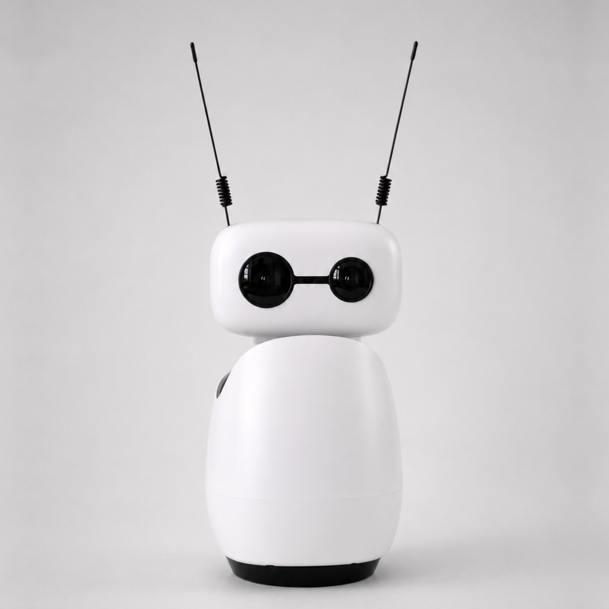

01 SISTEMA DE RECONOCIMIENTO PLANETARIO
QR
ESPERANDO SEÑAL...CÁMARA ÓPTICA // ONLINE
MISIÓN ACTIVA EXPLORACIÓN PLANETARIA
Una misión interactiva de astronomía: enseña una tarjeta QR y deja que tu guía espacial transforme cada planeta en una historia.
ENTRAR AL EXPLORADOR ↓01 SISTEMA DE RECONOCIMIENTO PLANETARIO
02 REACHY // GUÍA DE MISIÓN

ESPERANDO TARJETA
“Enséñame un planeta para comenzar nuestra misión.”
OBJETIVO IDENTIFICADO SATURNO_001
GIGANTE GASEOSO // SEXTO PLANETA
REACHY TE CUENTA
“¡Has encontrado Saturno, el planeta de los anillos! Sus famosos anillos están formados por incontables fragmentos de hielo, roca y polvo.”
TRANSMISIÓN EN CURSOARCHIVO DE MISIÓN // OBJETOS DISPONIBLES
El flujo principal siempre es la tarjeta QR. Selecciona un astro para previsualizar su ficha de misión.